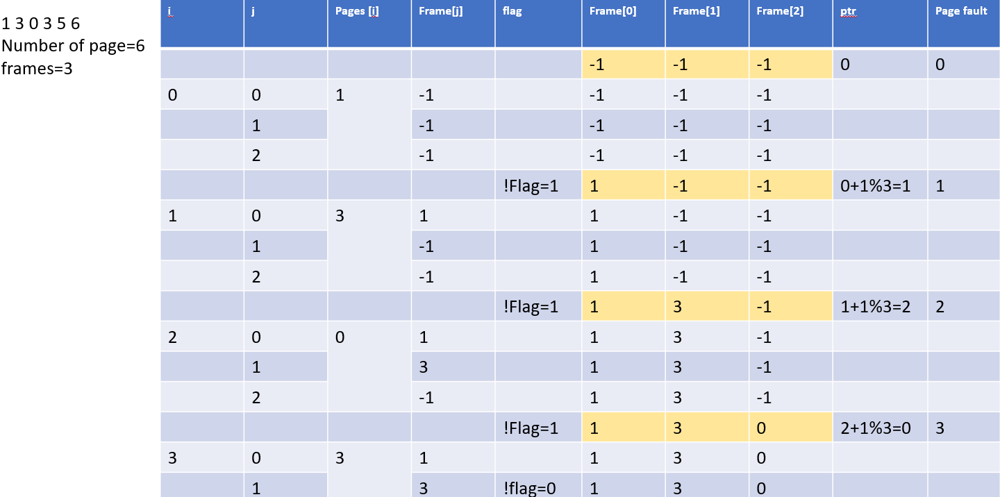
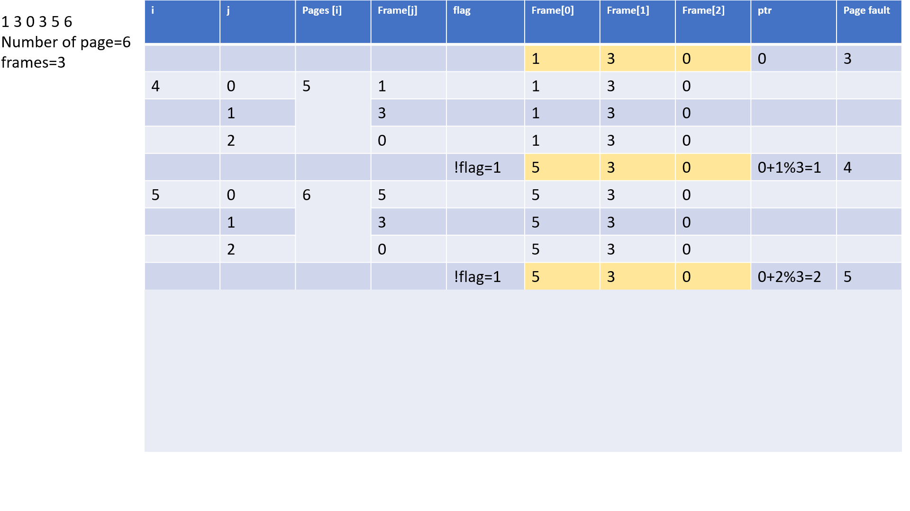

OS labs
☆FIFO PAGE REPLACEMENT pages[6],frames[3],infj,flag,pf,ptr; pages[6]={1 3 0 3 5 6} n=3 f=3 for(i=0;i<f;i++) frames[i]=-1; for(i=0;i<n;i++) { flag=0; for(j=0;j<f;j++) { if(frames[j]==pages[i]) flag=1; break; } if(!flag) { frames[ptr]=pages[i]; ptr=(ptr+1)%f; pf++; } printf("Total page faults:%d",pf); }
 
Data structures
STACK #include<stdio.h> #include<conio.h> #include<stdlib.h> #define MAX 6 int top=0; int stack[MAX]; int menu() {...} void push() { int data; if(top==MAX) {..stack overflow..} else { printf("\nEnter data:"); scanf("%d",&data); stack[top]=data; top+=1; {..data pushed..} } } void pop() { if(top==0) {..stack underflow..} else {"popped element:stack[--top]"} } void display() { int i; if(top==0) {..empty stack..} else {..loop->stack[i]..} } void main() {...}
QUEUE #include<stdio.h> #include<conio.h> #define MAX 6 int Q[MAX]; int front,rear; void insertQ() { int data; if(rear==MAX) {..LnrQ is full..} else { printf("\nEnter data:"); scanf("%d",&data); Q[rear]=data; rear++; printf("\nData inserted"); } } void deleteQ() { if(rear==front) {..EmptyQ..} else { printf(..deleted..); front++; } } void displayQ() { int i; if(rear==front) {..EmptyQ..} else {..loop->Q[i]..} }
Linked List #include<stdio.h> #include<conio.h> #include<stdlib.h> typedef struct slinklist{ int data; struct slinklist *next; }node; int menu() { int ch; printf("\n1.CREATE"); printf("\n2.INSERT_AT_BEG"); printf("\n3.INSERT_AT_INTRMDT"); printf("\n4.INSERT_AT_END"); printf("\n5.COUNT_NODE"); printf("\n6.display"); printf("\n7.exit"); scanf("%d",&ch); return ch; } node*insert_at_beg(node*start) { node*newnode; newnode=getnode(); if(start==NULL) { start=newnode; } else { newnode=>next=start; start=newnode; } return start; } node*getnode() { newnode=(node*)malloc(sizeof(node)); printf("\nEnter data:"); scanf("%d",&newnode->data); newnode->next=NULL; return newnode; } node*insert_at_mid(node*start) { node*newnode,*prev,*temp; int pos,nodectr,ctr=1; newnode=getnode(); printf("\nEnter the position:"); scanf(%d,&pos); nodectr=count_node(start); if(pos>1 && pos<nodectr) { temp=prev=start; while(ctr<pos) { prev=temp; temp=temp->next; ctr++; } prev->next=newnode; newnode->next=temp; } else { printf("not a middle posn"); } return start; } void insert_at_end(node*start) { node*newnode, *temp; newnode=getnode(); i(start==NULL) { start=newnode; } else { temp=start; while(temp->next!=NULL) temp=temp->next; temp->next=newnode; } } node*create_list(intn,node*start) { int i; node*newnode; node*temp; start=NULL; for(i=0;i<n;i++) { newnode=getnode(); if(start==NULL) { start=newnode; } else { temp=start; while(temp->next!=NULL) temp=temp->next; temp->next=newnode; } } return start; } void display(node*start) { node*temp; temp=start; printf("\nContents:"); while(temp!=NULL) { printf("%d->",temp->data);} temp=temp->next; } printf("X"); } int count(node*ptr) { int count=0; while(ptr!=NULL) { count++; ptr=ptr->next;} } return count; } void main() { int ch,t=1,n; int total; node*start=NULL; node*s; clrscr(); while(t>0) { ch=menu(); switch(ch) { case 1: if(start==NULL) { printf("number of nodes:"); scanf("%d",&n); s=create_list(n,start); printf("\ndone"); break; } case 2: s=insert_at_beg(s); break; case 3: s=insert_at_mid(s); break; case 4: insert_at_end(s); break; case 5: total=count_node(s); printf("total:%d",total); case 6: display(s); break; case 7: exit(0); } } getch(); }